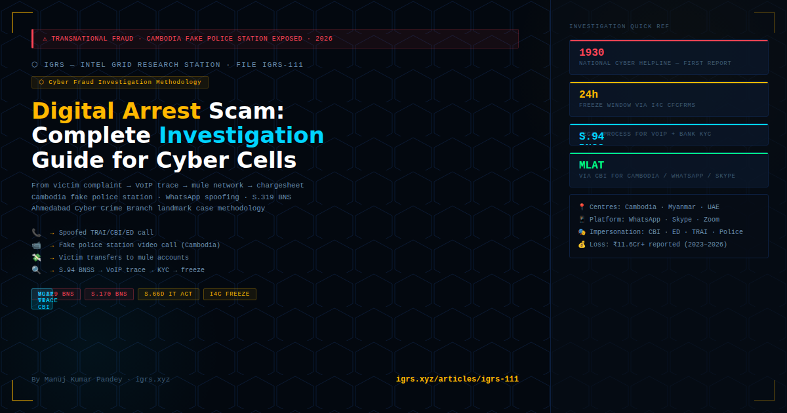

Digital arrest scams have emerged as India's fastest-growing cyber fraud category in 2024–2026, with victims losing over ₹11.6 crore since 2023 in reported cases alone. The actual figure is significantly higher. In May 2026, Cambodian authorities uncovered a fake Indian police station operating inside a scam centre — a stark indicator of how sophisticated and institutionalised this transnational fraud infrastructure has become.
This article provides a complete investigative methodology — from victim complaint to chargesheet — for cyber cell officers handling digital arrest cases.
A digital arrest operation runs in three stages, each with a distinct team and infrastructure:
| Stage | Team | Method | Location |
|---|---|---|---|
| 1. Initial contact | Caller team | Spoofed call from "TRAI", "CBI", "ED", "Delhi Police" — fake courier case, Aadhaar misuse, or FIR alert | Cambodia, Myanmar, UAE, or India |
| 2. Escalation + isolation | Impersonator team | Video call on WhatsApp/Skype wearing police uniform in fake "police station" set — victim kept on call, barred from contacting family | Scam centre (Cambodia, Thailand) |
| 3. Financial extraction | Money mule network | Victim transfers to mule accounts under pretext of "bail", "RBI verification", "court deposit" | India (mule accounts) |
Cambodia angle (2026): Cambodian authorities discovered a scam centre with a fully constructed fake Indian police station — police uniforms, backdrop of Indian police signage, official-looking furniture — specifically for video call impersonation of Indian LEA. Victims cannot distinguish this from a real police station on a video call.
Immediate actions: Obtain victim's phone (preserve call logs, WhatsApp chat, transaction records). Note: VoIP numbers used, WhatsApp caller ID, times of contact. Check 1930's NCRP for previous complaints against same number or account — pattern recognition across complaints is critical for identifying network nodes.
Victim's transfer destination is the most actionable lead. Issue S.94 BNSS to the receiving bank within 24 hours — request KYC, account opening documents, linked mobile, IP logs, and all subsequent transfers. Emergency freeze request simultaneously via I4C's CFCFRMS portal.
Digital arrest scammers invariably use VoIP numbers to spoof Indian landline or mobile numbers. Tracing these is possible but requires specific legal instruments:
| VoIP Provider Type | Legal Process | What You Get |
|---|---|---|
| Indian telecom (BSNL/Airtel/Jio OTT) | S.94 BNSS to nodal officer | Registration IP, device, payment details |
| WhatsApp (Meta India) | S.94 BNSS to Meta India's designated officer or MLAT via CBI | Account creation IP, phone number, last active, linked accounts |
| Skype/Teams (Microsoft) | MLAT via CBI (US company) | Account data, IP logs, billing info |
| International VoIP (Twilio, Vonage) | MLAT via CBI (US-based) | Originating phone number, billing address, usage logs |
| Telegram | MLAT or direct to Telegram legal team (Dubai entity) | Limited — only for specific IP in serious cases |
Key tactic: Request subscriber information for the VoIP number that called the victim AND the number the scammer claimed to be (spoofed number). Discrepancy between the two is primary evidence of personation under S.319 BNS + S.66D IT Act.
| Section | Element Covered | Key Evidence Needed |
|---|---|---|
| S.319 BNS | Cheating by personation — impersonating CBI/ED/Police officer | Video/audio recording, WhatsApp screenshot, uniform evidence |
| S.318 BNS | Cheating — financial deception | Bank transaction records, victim statement |
| S.170 BNS | Personation of public servant | Impersonation of CBI/ED/Police — certified communication records |
| S.351 BNS | Criminal intimidation | Threats of arrest, imprisonment, family exposure |
| S.66D IT Act | Personation using computer resource (video call) | WhatsApp/Skype session data, device evidence |
| S.66C IT Act | Identity theft (fake Aadhaar, fake warrants) | Fake documents produced to victim |
| PMLA S.3/4 | Money laundering via mule account layering | Transaction graph from mule → aggregator accounts |
| S.63 BSA 2023 | Electronic evidence certificate for all digital evidence | Certificate from competent authority for any device/log data |
The Ahmedabad Cyber Crime Branch's 2024 operation remains the benchmark for digital arrest investigation in India. Key elements:
| Parameter | Detail |
|---|---|
| Accused arrested | 17 (including 4 Taiwanese nationals) |
| Operation scope | One of India's largest digital arrest fraud networks |
| Referencing | PM Modi's Mann Ki Baat — national attention |
| Lead investigator | JCP (Crime) Sharad Singhal + DCP Dr Lavina Sinha + ACP Hardik Makadia |
| Documentation | 'Cyber Trails: Unmasking Digital Crimes' — 403-page investigation manual (2026) |
| Key investigative lever | International cooperation with Taiwan + financial intelligence from mule account network |
Digital arrest cases require multi-source evidence packages. Each element must carry an S.63 BSA 2023 certificate:
| Evidence Type | Source | Certificate Required |
|---|---|---|
| WhatsApp video call recording | Victim's phone (Cellebrite extraction preferred) | S.63 BSA + hash verification |
| Bank transaction records | S.94 BNSS to bank | Bank's certifying officer certificate |
| VoIP subscriber data | S.94 BNSS / MLAT | Provider's certificate + MLAT chain |
| IP logs of mule account login | S.94 BNSS to bank + ISP | Bank + ISP certificates |
| KYC documents (mule account) | S.94 BNSS to bank | Bank's KYC officer certificate |
| NCRP complaint history | I4C portal | I4C officer certificate |